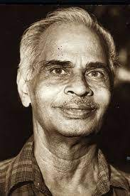

ജീവിതയാഥാർഥ്യങ്ങളെ പച്ചയായി ചിത്രീകരിക്കുന്ന കവിതകൾ എഴുതി ശ്രദ്ധേയനായ മലയാള സാഹിത്യകാരനായിരുന്നു വൈലോപ്പിള്ളി ശ്രീധരമേനോൻ (ജീവിതകാലം: 1911 മെയ് 11 - 1985 ഡിസംബർ 22 ). എറണാകുളം ജില്ലയിൽ തൃപ്പൂണിത്തറയിൽ കൊച്ചുകുട്ടൻ കർത്തയുടെയും നാണിക്കുട്ടിയമ്മയുടേയും പുത്രനായി ജനിച്ചു, സസ്യശാസ്ത്രത്തിൽ ബിരുദമെടുത്തതിനുശേഷം 1931-ൽ അദ്ധ്യാപനവൃത്തിയിൽ പ്രവേശിച്ചു. ഭാനുമതിയമ്മയെ വിവാഹം ചെയ്തു. രണ്ട് ആൺമക്കൾ, ശ്രീകുമാർ, വിജയകുമാർ. 1966-ൽ ഹൈസ്കൂൾ പ്രധാനാദ്ധ്യാപകനായാണ് വിരമിച്ചത്. മലയാളിയുടെ ഏറ്റവും സൂക്ഷ്മമായ രഹസ്യങ്ങളിൽ രൂപകങ്ങളുടെ വിരലുകൾകൊണ്ട് സ്പർശിച്ച കവിയാണ് വൈലോപ്പിള്ളി. എല്ലാ മരുഭൂമികളെയും നാമകരണം ചെയ്തു മുന്നേറുന്ന അജ്ഞാതനായ പ്രവാചകനെപ്പോലെ മലയാളിയുടെ വയലുകൾക്കും തൊടികൾക്കും സഹ്യപർവ്വതത്തിനും കയ്പവല്ലരിയ്ക്കും മണത്തിനും മഴകൾക്കുമെല്ലാം കവിതയിലൂടെ അനശ്വരതയുടെ നാമം നൽകിയ വൈലോപ്പിള്ളി, കേരളത്തിന്റെ പുൽനാമ്പിനെ നെഞ്ചിലമർത്തിക്കൊണ്ട് എല്ലാ സമുദ്രങ്ങൾക്കും മുകളിൽ വളർന്നു നിൽക്കുന്നു. മാമ്പൂവിന്റെ മണവും കൊണ്ടെത്തുന്ന വൃശ്ചികക്കാറ്റ് മലയാളിയുടെ ഓർമ്മകളിലേക്ക് സങ്കടത്തിന്റെ ഒരശ്രുധാരയും കൊണ്ടുവരുന്നുണ്ട്. വൈലോപ്പിള്ളിയുടെ മാമ്പഴത്തിലൂടെ മലയാളി അനുഭവിച്ചറിഞ്ഞ ആ പുത്രദുഃഖം, ഒരു പക്ഷേ, ഭൂമിയുടെ അനശ്വരമായ മാതൃത്വത്തിലേക്ക് തിരിച്ചുപോയ പുത്രന്മാരുടെയും ജനപദങ്ങളുടെയും ഖേദമുണർത്തുന്നു. ഈ മഹാകവി രക്തസ്രാവത്തെ തുടർന്ന് 1985 ഡിസംബർ 22-ന് അന്തരിച്ചു.
"ശ്രീ" എന്ന തൂലികാനാമത്തിൽ എഴുതിത്തുടങ്ങിയ കവിയുടെ കവിതകൾ പലതും കേരളത്തിൽ ഒരു ഭാവുകപരിവർത്തനം സൃഷ്ടിച്ചു. രണ്ട് ലോകമഹായുദ്ധങ്ങൾ കണ്ട ഭൂമി, അതിന്റെ ഫലമായുണ്ടായ പട്ടിണിയും ദാരിദ്ര്യവും, എന്നിങ്ങനെ തികച്ചും അശാന്തമായ ഒരു കാലഘട്ടത്തിലാണ് കവി തന്റെ യൌവനം കഴിച്ചു കൂട്ടിയത്. കാലവും ലോകവും മാറുന്നു എന്നതാണ് വൈലോപ്പിള്ളിക്കവിതയുടെ ആധാരശില.വൈലോപ്പിള്ളിയുടെ സമപ്രായക്കാരനും, അടുത്തടുത്ത ഗ്രാമങ്ങളിൽ ജനിച്ചവരുമായിരുന്ന ചങ്ങമ്പുഴയുടേയും, ഇടപ്പള്ളി രാഘവൻപിള്ളയുടെയും കാൽപ്പനിക പ്രസ്ഥാനങ്ങൾ മലയാള കവിതാ രംഗത്തിൽ വെന്നിക്കൊടി പാറിച്ച് നിൽക്കുന്ന അവസരത്തിൽ അതിൽ നിന്നും തീർത്തും വ്യത്യസ്തമായി യാഥാർത്ഥ്യത്തിന്റെ ഒരു പാത വെട്ടിത്തെളിച്ചെടുത്തവരിൽ ഒരാളായിരുന്നു വൈലോപ്പിള്ളി. ഇടശ്ശേരി ഗോവിന്ദൻ നായർ, എൻ.വി. കൃഷ്ണവാര്യർ മുതലായവരായിരുന്നു അദ്ദേഹത്തിന്റെ സമപ്രായക്കാരും സമശൈലീയരും ആയിരുന്ന ചിലർ.
കന്നിക്കൊയ്ത്ത്
പൊന്നുഷസ്സിന്റെ കൊയ്ത്തില്നിന്നൂരി
ചിന്നിയ കതിര് ചുറ്റും കിടക്കെ
മേവി കൊയ്ത്തുകാര് പുഞ്ചയില്
ഗ്രാമജീവിതകഥാ നാടകഭൂവില്
കെട്ടിയ മുടി കച്ചയാല് മൂടി
ചുറ്റിയ തുണി ചായ്ച്ചൊന്നു കുത്തി
വെറ്റില ചവച്ചുന്മദമോളം
വെട്ടിടും അരിവാളുകളേന്തി
ഒന്നിച്ചാനമ്ര മെയ്യോടെ നില്പൂ
കന്നിപ്പാടത്തു കൊയ്ത്തുകാര് നീളെ
നല്പുലര്കാലപാടല വാനില്
ശുഭ്രമേഘ പരമ്പര പോലെ
ആകെ നേര്വഴി പാലിപ്പിനാരും
ആനപോലെ കടന്നു കൊയ്യല്ലേ
താഴ്ത്തിക്കൊയ്യുവിന് തണ്ടുകള് ചേറ്റില്
പൂഴ്ത്തി തള്ളൊല്ലേ നെല്ലു പൊന്നാണേ
തത്തപോലെ മണിക്കതിര് മാത്രം
കൊത്തിവയ്കലാ നീ കൊച്ചുപെണ്ണെ
കൊയ്യുവാനോ നീ വന്നതു കൊള്ളാം
കൊഞ്ചുകാളാഞ്ചിമീന് പിടിപ്പാനോ
നീട്ടിയാല്പ്പോര നാവുകൊണ്ടേവം
നീട്ടിക്കൊയ്യണം നീയനുജത്തീ
കാതിലം കെട്ടാന് കൈവിരുതില്ലേ
നീ തലക്കെട്ടു കെട്ടിയാല്പ്പോരും
ചെമ്മില്ച്ചെങ്കതിര് ചേര്ത്തരിഞ്ഞേവം
തമ്മില്പ്പേശുന്നു കൊയ്ത്തരിവാള്കള്
പാടുവാന് വരുന്നീലവര്ക്കെന്നാല്
പാരമുണ്ടു പയ്യാരങ്ങള് ചൊല്വാന്
തെങ്ങണിത്തണലാര്ന്നിവര് തീരത്ത്
അങ്ങ് കൂടിക്കഴിഞ്ഞിടും ഗ്രാമം
നിത്യവും ജീവിതം വിതയേറ്റി
മൃത്യുകൊയ്യും വിശാലമാം പാടം
തത്ര കണ്ടിടാം കൊയ്തതിന് ചാമ്പല്
ക്കുത്തിലേന്തിക്കുളുര്ത്ത ഞാര്ക്കൂട്ടം
അത്തലിന്കെടുപായലിന്മീതെ
യുള്ത്തെളിവിന്റെ നെല്ലിപ്പൂന്തോട്ടം
ചൂഴെയെത്തുന്ന രോഗദാരിദ്ര്യ
ച്ചാഴിയൂറ്റിക്കുടിച്ചതിന്കോട്ടം
ചെഞ്ചെറുമണികൊത്തിടും പ്രേമ
പഞ്ചവര്ണ്ണക്കിളിയുടെയാട്ടം
എത്ര വാര്ത്തകളുണ്ടിതേപ്പറ്റി
ക്കൊയ്ത്തുകാരുടെയിപ്പഴമ്പായില്
കന്യ പെറ്റുപോല് മറ്റൊരു ബാല-പെണ്ണിനെ
കട്ടുകൊണ്ടുപോയ് പ്രേയാന്
മുത്തന് തൂങ്ങിമരിച്ചുപോല് തായെ
പുത്രന് തല്ലിപോലഭ്യസ്തവിദ്യന്
എത്ര ചിത്രം പുരാതനം എന്നാല്
പുത്തനാമീക്കഥകളിലെല്ലാം
ധീരം വായ്ക്കുന്നു കണ്ണുനീര്ക്കുത്തില്
നേരമ്പോക്കിന്റെ വെള്ളിമീന് ചാട്ടം
ആകുലം മര്ത്ത്യമാനസം ധീരം
ആകിലും കാലമെത്രമേല് ക്രൂരം
കൊയ്യുവാനോ ഹാ ജീവിതഭാരം
കൊണ്ടുതാനോ കുനിഞ്ഞൊരീ മുത്തി
വായ്ച്ചെഴും കന്നിപ്പാടത്തൊരുണ്ണി-
യാര്ച്ചപോല് പണ്ടു മിന്നിയ തന്നില്
ഇന്നവള്ക്കുതിര്നെല്ക്കതിര് താഴേ-
നിന്നെടുക്കാനും എത്രതാന് നേരം
ഏറെ വേലയാല് വേദനയാലും
ചോരനീര്വറ്റി ചുങ്ങിയ തന്മെയ്
നാലുംകൂട്ടി മുറുക്കിയശേഷം
കാലം തുപ്പാന്പോംത്തമ്പലം പോലായ്
നെല്ലിനോടു പിറുപിറുത്തെന്തോ
ചൊല്ലിനില്ക്കുമീയന്യയാം നാരി
കന്നിനാളിലേ ഗ്രാമസംഗീത-
കിന്നരന് താലികെട്ടിയ തന്വി
ഇങ്ങു പാടങ്ങള് കോള്മയിര്ക്കൊള്കേ
തെങ്ങുറുമിവാളുച്ചലിപ്പിക്കേ
പാടിപോലിവള് പണ്ടഭിമാനം
തേടുമുത്തരകേരളവീര്യം
ഒറ്റയായ് അവള് പിന്നീടു വീട്ടില്
പെറ്റ മാലുകളോടടരാടി
പേപിടിച്ചു കാല്ച്ചങ്ങല പുച്ഛം
പേശവേ അന്ത്യഗാനങ്ങള് പാടി
തന്മതിഭ്രമം തീര്ന്നുപോയ് എന്നാല്
ആ മുളങ്കിളി പാടില്ല മേലില്
എന്തിനേറെ ഈ കൊയ്വതില് ആരെ
എന്റെയോമലെന്നെന് കരള് ചെല്വൂ
കൊയ്ത്തു നിര്ത്തിയിടയ്ക്കിടക്കെന്നെ
യെത്തിനോക്കുമേതാളുടെ കണ്കള്
എന്നിലോരോ കിനാവുകള് പാകി
എന്റെ പാട്ടിന്നു പൂഞ്ചിറകേകി
എട്ടുരണ്ടിലെച്ചാരുത പൊന്മൊ-
ട്ടിട്ടു നില്ക്കുമാപ്പെണ്കൊടിപോലും
വേട്ടു കൂട്ടുപിരിഞ്ഞുപോയ് ഏതോ
നാട്ടിലാനന്ദം നാട്ടിയശേഷം
ജീവിതത്തിന്റെ തല്ലിനാല്മെയ്യുള്-
പ്പൂവിതളുകള് പോയ് വടുക്കെട്ടി
പേര്ത്തുമെത്തുമീപ്പാടത്തു കൊയ്യാന്
പാഴ് തുണിയില് പൊതിഞ്ഞൊരു ദുഃഖം
വെണ്കതിര്പോല് നരച്ചൊരാശ്ശീര്ഷത്തിങ്കല്
നര്മ്മങ്ങള് തങ്ങിനിന്നാലും
ആയതിന് മഹാധീരത വാഴ്ത്താന്
ഗായകനിവന് കൂടെയുണ്ടാമോ
കന്നിനെല്ലിനെയോമനിച്ചെത്തി
യെന്നൊടോതീ സദാഗതി വായു
നിര്ദ്ദയം മെതിച്ചീ വിളവുണ്മാന്
മൃത്യുവിന്നേകും ജീവിതംപോലും
വിത്തൊരിത്തിരി വെയ്ക്കുന്നു വീണ്ടും
പത്തിരട്ടിയായ്പ്പൊന് വിളയിപ്പാന്
കന്നിനാളിലെക്കൊയ്ത്തിനുവേണ്ടി
മന്നിലാദിയില് നട്ട വിത്തെല്ലാം
പൊന്നലയലച്ചെത്തുന്നു നോക്കൂ
പിന്നയെത്രയോ കൊയ്ത്തുപാടത്തില്
ഹാ വിജഗീഷു മൃത്യുവിന്നാമോ
ജീവിതത്തിന് കൊടിപ്പടം താഴ്ത്താന്
തന്വിരിമിഴിത്തെല്ലിനാലീ നിന്
മുന്നില് നാകം തുറക്കുമീത്തയ്യല്
കണ്ണുനീര്ച്ചാലില് മണ്ണടിഞ്ഞേക്കാം
നിന്പിപഞ്ചിയും മൂകമായ്പ്പോകാം
എന്നിരിക്കിലുമന്നെഴും കൊയ്ത്തില്
സ്വിന്നമാം കവിള്ത്തട്ടിലെച്ചോപ്പാല്
ധന്യനാമേതോ ഗായകബാലന്
തന്നുയിരിനെയുജ്ജ്വലമാക്കി
തന്വിമാരൊത്തു കൊയ്യുവാന് വന്ന
കന്നിമാസത്തിന് കൗതുകംപോലെ
കണ്ണിനാനന്ദം നല്കിടും ഗ്രാമ
കന്യയാളൊന്നീപ്പാടത്തു കൊയ്യും
നിങ്ങള്താനവര് ഇന്നത്തെപാട്ടില്
നിന്നു ഭിന്നമല്ലന്നെഴും ഗാനം
ഇപ്പൊരുളറിയാതറിഞ്ഞാവാം
നില്പതിമ്പമായ് ഗ്രാമീണചിത്തം
ആകയാല് ഒറ്റയൊറ്റയില്ക്കാണു-
മാകുലികളെപ്പാടിടും വീണേ
നീ കുതുകമോടാലപിച്ചാലും
ഏകജീവിതാനശ്വരഗാനം
ഹരിജനങ്ങളുടെ പാട്ട്
പിഴപൊറുക്കണേ,ഞങ്ങളറിഞ്ഞീല,
പഴയപോലിതാ ബാപ്പുവിൻ ജന്മനാൾ
അറിവതെന്തുതാൻ-അന്ധമാം കൂരിരുൾ
പിറവി തന്നൊരീ ഞങ്ങളധഃകൃതർ?
ചിത ചിരിയ്ക്കവേ കണ്ടീല പൊൻകതിർ
ചിതറി വന്നൊരിജ്ജന്മതാരത്തിനെ
വെറുതെയല്ലെങ്കി,ലാണ്ടിൻ പരപ്പിലീ-
യൊരു പിറന്നാൾവിളക്കിൻ ചെറുതിരി
മഹിമയുള്ളവർ മണ്ണടിഞ്ഞന്നുതൊ-
ട്ടഖിലനാൾകളും തന്തിരുനാളുകൾ!
നഗരിചെന്നെതിരേല്ക്കുന്നു,കുഗ്രാമ-
മകമലിഞ്ഞലിച്ചോർക്കുന്നിതിദ്ദിനം
പതുപതുത്തുള്ള കൈയുകൾ വെള്ളനൂൽ
ക്കതിരുനൂല്പ്പൂ-ചിലന്തികൾ കൂടിയും!
അറ കുമിയ്ക്കുവോരന്നം കൊടുക്കുന്നു
ചെറിയ കുമ്പിളിൽ; പാല പൂ തൂകുന്നു!
വെളികലീല്ക്കൂട്ട,മാഘോഷയാത്രകൾ
പലവഴി,പെരുംചങ്ങല പോലവേ
പെരിയവർക്കറിവേറുമേ, ബാപ്പുവിൻ
പിറവിനാളിൻ പൊലിമ കൊണ്ടാടുവാൻ
അറിവതെന്തുതാ,നന്ധമാം കൂരിരുൾ
പിറവി തന്നൊരീ ഞങ്ങളധഃകൃതർ?
വിടുപണികളാൽ ഞങ്ങളോർമ്മിയ്ക്കട്ടെ
വിനകൾ മാർജ്ജനം ചെയ്തൊരാത്തോട്ടിയെ
ഉടൽ തര്യ്ക്കുന്നിതോർക്കുമ്പോ,ഴാരിലു-
മുപരി ഞങ്ങളെ സ്നേഹിച്ചു ബാപ്പുജി
അരിയ നാടിതു നാട്ടുകാർക്കേകുവാ-
നരചനോടു വീറോടു പോരാടിയോൻ
പെരുവഴികളിൽ പിച്ചയിരന്നീലേ
ചെറുതു ഞങ്ങൾതൻ ജീവൻ കുളിർക്കുവാൻ?
പൊരുളറിഞ്ഞവർ ബുദ്ധനായ് കൃസ്തുവായ്
തിരുനബിയായ് പുകഴ്ത്തുമാപ്പുണ്യവാൻ
ഉയിരുണരാൻ പടിപ്പിച്ചു ഞങ്ങളെ-
യുടയതമ്പുരാൻ തൻ തിരുനാമങ്ങൾ
ഹരിജനങ്ങളായ്,ഞങ്ങളെക്കണ്ട ത-
ന്നരിമയെ,ങീയിളിമ‘യെങ്ങോർക്കിൽ?
പകലൊടുങ്ങുന്നു, പാഴ്നാളിൽ നീളുന്നൂ
പഴയദില്ലി തൻ പാർശ്വഭാഗങ്ങളിൽ
കരൾ നിനയ്ക്കയാണിന്നേര,മാഢ്യർതൻ
കനിവിരുന്നുകളുൺനുവാൻ നില്ക്കാതെ
ഇവിടെ ഞങ്ങളീ’ഭംഗികൾ‘മേവിടു-
മിടമണഞ്ഞിടും നാട്ടിന്നിടയനെ
കുറിയമുണ്ടുടു,ത്താവലംകൈയിലെ
പ്പെരുവടിയൂന്നി,പ്പുഞ്ചിരിതൂകിയും,
പകൽ പണികഴിഞ്ഞെത്തിടും ഞങ്ങൾ തൻ
പഴവനെപ്പോലണയും ദയാർദ്രനെ
(മിഴിയടഞ്ഞവർതൻ പടമെങ്ങിനെ
മിഴിവു തേറ്റുന്നതോർമ്മ തൻ തൂമയാൽ)
ചിരികളികൾ,കരിങ്കിളിപോലെഴും
ചെറിയ കുഞ്ഞുങ്ങൾക്ക,മ്മമാർക്കൊക്കെയും
നിറുകയിങ്കലനുഗ്രഹക്കൈനഖ-
നിറനിലാവു, ഞങ്ങൾക്കുപദേശവും,
കരുതിവന്നോരതിഥിയെല്ലാർക്കുമേ
കനിവമൃതിനാൽ സല്ക്കാരമേകുവോൻ!
കഴലിണകൾ പതിഞ്ഞൊരാ മുറ്റത്തി-
ലഴകിൽ മെത്തീ വിശുദ്ധിപ്പിറാവുകൾ
വരമൊഴികൾ പൊഴിഞ്ഞൊരാക്കൂരയിൽ
നിറയെമിന്നീയറിവിൻ വിളക്കുകൾ
പരമവിടുത്തെയോമല്ക്കിടാത്തിയാ-
മരിയ ചർക്ക,യെളിയോർക്കുടുക്കുവാൻ
അവിരതം സ്വച്ഛനൂലുളവാക്കവേ
അവിടെ വാർന്നിതൈശ്വര്യസംഗീതികൾ
അയലിലോരികൾ കൂക്കിവിളി,യ്ക്കെ,യ-
ങയവിറക്കീ സമാധാനമാനുകൾ
പുതിയ കാലം പുലർന്നിതെല്ലാർക്കുമായ്
പുലരി വന്നു തുറന്നു പൊന്നമ്പലം
ഉണരു-കെങ്കിലും ദർശനത്തിന്നുമു-
ന്നണി നയിയ്ക്കുവോ,നെങ്ങാപ്പെരിയവൻ?
ഇരുപതും നൂറുമാണ്ടുകൾ താനിരു-
ന്നരുളുകിൽ ഞങ്ങളെത്ര വളർന്നേനെ!
പലരുമുണ്ടിതാ ഞങ്ങളെസ്സേവിപ്പാൻ?
ഒടുവടഞ്ഞൊരാ കൺകളും കൂപ്പുകൈ-
പ്പടവുമെങ്ങൾക്കു നന്മ നേർന്നീലയോ?
പ്രിയപിതാവേ,യീ ഞങ്ങളും നേരുന്നു
ഉയിരിനങ്ങേയ്ക്കു ശാന്തിയുണ്ടാവട്ടെ!
മാമ്പഴം
അങ്കണ തൈമാവിൽനിന്നാദ്യത്തെ പഴം വീഴ്കെ
അമ്മതൻ നേത്രത്തിൽ നിന്നുതിർന്നൂ ചുടുകണ്ണീർ
നാലുമാസത്തിൻ മുൻപിലേറെനാൾ കൊതിച്ചിട്ടീ
ബാലമാകന്ദം പൂവിട്ടുണ്ണികൾ വിരിയവേ
അമ്മതൻ മണിക്കുട്ടൻ പൂത്തിരികത്തിച്ചപോൽ
അമ്മലർച്ചെണ്ടൊന്നൊടിച്ചാഹ്ലാദിച്ചടുത്തെത്തീ
ചൊടിച്ചൂ മാതാവപ്പോൾ ഉണ്ണികൾ വിരിഞ്ഞ-
പൂവൊടിച്ചു കളഞ്ഞില്ലെ കുസൃതിക്കുരുന്നേ നീ
മാങ്കനി വീഴുന്നേരം ഓടിച്ചെന്നെടുക്കേണ്ടോൺ
പൂങ്കുല തല്ലുന്നതു തല്ലുകൊള്ളാഞ്ഞിട്ടല്ലേ
പൈതലിൻ ഭാവം മാറി വദനാംബുജം വാടീ
കൈതവം കാണാക്കണ്ണു കണ്ണുനീർത്തടാകമായ്
മാങ്കനി പെറുക്കുവാൻ ഞാൻ വരുന്നില്ലെന്നവൻ
മാൺപെഴും മലർക്കുലയെറിഞ്ഞു വെറും മണ്ണിൽ
വാക്കുകൾ കൂട്ടിച്ചൊല്ലാൻ വയ്യാത്ത കിടാങ്ങളെ
ദീർഘദർശനം ചെയ്യും ദൈവജ്ഞരല്ലോ നിങ്ങൾ
തുംഗമാം മീനച്ചൂടാൽ തൈമാവിൻ മരതക-
ക്കിങ്ങിണി സൗഗന്ധികം സ്വർണ്ണമായ് തീരും മുൻപേ
മാങ്കനി വീഴാൻ കാത്തു നിൽക്കാതെ മാതാവിന്റെ
പൂങ്കുയിൽ കൂടും വിട്ടു പരലോകത്തെ പൂകി
വാനവർക്കാരോമലായ് പാരിനെക്കുറിച്ചുദാസീനനായ്
ക്രീഡാരസ ലീലനായവൻ വാഴ്കെ
അയൽപക്കത്തെ കൊച്ചുകുട്ടികളുത്സാഹത്തോ-
ടവർതൻ മാവിൻചോട്ടിൽ കളിവീടുണ്ടാക്കുന്നു
പൂവാലനണ്ണാർക്കണ്ണാ മാമ്പഴം തരികെന്നു
പൂവാളും കൊതിയോടെ വിളിച്ചുപാടീടുന്നു
വാസന്തമഹോത്സവമാണവർക്കെന്നാൽ
അവൾക്കാ ഹന്ത! കണ്ണിരിനാൽ അന്ധമാം വർഷക്കാലം
പൂരതോനിസ്തബ്ദയായ് തെല്ലിട നിന്നിട്ടു തൻ
ദുരിത ഫലം പോലുള്ളപ്പഴമെടുത്തവൾ
തന്നുണ്ണിക്കിടാവിന്റെ താരുടൽ മറചെയ്ത
മണ്ണിൽ താൻ നിക്ഷേപിച്ചു മന്ദമായ് ഏവം ചൊന്നാൾ
ഉണ്ണിക്കൈക്കെടുക്കുവാൻ ഉണ്ണിവായ്ക്കുണ്ണാൻ വേണ്ടി
വന്നതാണീ മാമ്പഴം; വാസ്തവമറിയാതെ
പിണങ്ങിപ്പോയീടിലും പിന്നെ ഞാൻ വിളിക്കുമ്പോൾ
കുണുങ്ങിക്കുണുങ്ങി നീ ഉണ്ണുവാൻ വരാറില്ലെ
വരിക കണ്ണാൽ കാണാൻ വയ്യത്തൊരെൻ കണ്ണനേ
സരസാ നുകർന്നാലും തായ തൻ നൈവേദ്യം നീ
ഒരു തൈകുളിർക്കാറ്റായരികത്തണഞ്ഞപ്പോൾ
അരുമക്കുഞ്ഞിൻ പ്രാണൻ അമ്മയെ ആശ്ലേഷിച്ചു.
ഊഞ്ഞാലിൽ
ഒരു വെറ്റില നൂറുതേച്ചു നീ തന്നാലുമീ -
ത്തിരുവാതിരരാവു താംബൂലപ്രിയയല്ലോ
മഞ്ഞിനാൽ ചൂളീടിലും മധുരം ചിരിക്കുന്നു
മന്നിടം; നര ചൂഴും നമുക്കും ചിരിക്കുക !
മാമ്പൂവിൻ നിശ്വാസമേറ്റോർമകൾ മുരളുമ്പോൾ
നാം പൂകുകല്ലീ വീണ്ടും ജീവിത മധുമാസം!
മുപ്പതുകൊല്ലം മുമ്പ് നീയുമീ മന്ദസ്മിത -
മുഗ്ധയാം പൊന്നാതിരമാതിരിയിരുന്നിപ്പോൾ
ഇതുപോലൊരു രാവിൽത്തൂമഞ്ഞും വെളിച്ചവും
മധുവുമിറ്റിറ്റുമീമുറ്റത്തെ മാവിൻചോട്ടിൽ
ആരുമേ കാണാതിരുന്നുഴിഞ്ഞാലാടീലേ നാം
നൂറുവെറ്റില തിന്ന പുലരി വരുവോളം
ഇന്നുമാ മുത്തുമാവിന്നോർമ്മയുണ്ടായീ പൂക്കാ -
നുണ്ണിത്തൻ കളിമ്പമൊരുഞ്ഞാലുമതില്കെട്ടി
ഉറക്കമായോ നേർത്തേയുണ്ണിയിന്നുറങ്ങട്ടെ,
ചിരിച്ചു തുള്ളും ബാല്യം ചിന്ത വിട്ടുറങ്ങട്ടെ
പൂങ്കിളി കൗമാരത്തിന്നിത്തിരി കാലം വേണം
മാങ്കനികളിൽനിന്നു മാമ്പൂവിലെത്തിച്ചേരാൻ.
വീശുമീ നിലാവിന്റെ വശ്യശക്തിയാലാകാം
ആശയൊന്നെനിക്കിപ്പോൾത്തോന്നുന്നു,മുന്നെപ്പോലെ
വന്നിരുന്നാലും നീയീയുഴിഞ്ഞാൽപ്പടിയിൽ, ഞാൻ
മന്ദമായ്ക്കാല്ലോലത്തെത്തെന്നൽപോലാട്ടാം നിന്നെ
ചിരിക്കുന്നുവോ? കൊള്ളാം യൗവനത്തിന്റേതായ്, ക -
യ്യിരിപ്പുണ്ടിന്നും നിനക്കാമനോഹരസ്മിതം!
അങ്ങനെയിരുന്നാലും,ഈയൂഞ്ഞാൽ പടിയിന്മേൽ -
ത്തങ്ങിനാ ചെറുവള്ളിത്താലിപോലിരുന്നാലും!
കൃശമെൻ കൈകൾക്കു നിന്നുദരം മുന്നേപ്പോലെ,
കൃതസന്തതിയായി സ്ഥൂലയായ് നീയെങ്കിലും.
നമ്മുടെ മകളിപ്പോൾ നൽകുടുംബിനിയായി
വൻപെഴും നഗരത്തിൽ വാഴ്കിലും സ്വപ്നം കാണാം
ആതിരപ്പെണ്ണിന്നാടാനമ്പിളി വിളക്കേന്തൂ -
മായിരംകാല്മണ്ഡപമാകുമീ നാട്ടിൻപുറം!
ഏറിയ ദുഖത്തിലും ജീവിതോല്ലാസത്തിന്റെ
വേരുറപ്പിവിടെപ്പോൽക്കാണുമോ വേറെങ്ങാനും ?
പാഴ്മഞ്ഞാൽ ചൂളീടിലും പഞ്ഞത്താൽ വിറയ്ക്കിലും
പാടുന്നു, കേൾപ്പീലേ നീ ?പാവങ്ങളയൽ സ്ത്രീകൾ ?
പച്ചയും ചുവപ്പുമാം കണ്ണുമായ്, പോരിൻ വേട്ട -
പക്ഷിപോലതാ പ്പാറിപ്പോകുമാ വിമാനവും
ഒരു ദുസ്വപ്നം പോലെ പാഞ്ഞുമാഞ്ഞുപോ,മെന്നാൽ
തിരുവാതിരത്താര്തത്തീക്കട്ടെയെന്നും മിന്നും
മാവുകൾ പൂക്കും മാനത്തമ്പിളി വികസിക്കും
മാനുഷർ പരസ്പരം സ്നേഹിക്കും,വിഹരിക്കും
ഉയിരിൻ കൊലക്കുടക്കാക്കാവും കയറിനെ -
യുഴിഞ്ഞാലാക്കിത്തീർക്കാൻ കഴിഞ്ഞതല്ലേ ജയം!
ആലപിക്കുക നീയുമതിനാൽ മനം നൃത്ത-
ലോലമക്കുമഗഗാനം കല്യാണീ കളവാണീ
പണ്ടുനാളെപ്പോലെന്നെ പ്പുളകം കൊള്ളിച്ചു നിൻ
കണ്ഠനാളത്തിൽ സ്വർണക്കമ്പികൾ തുളുമ്പവേ,
മെല്ലവേ നീളും പാട്ടിന്നീരടികൾ തഞ്ഞൂഞ്ഞാൽ-
വള്ളിയിലങ്ങോട്ടിങ്ങോട്ടെൻ കരളാടീടവേ,
വെൺനര കലർന്നവളല്ല നീയെൻ കണ്ണിന്നു
കണ്വമാമുനിയുടെ കന്യ'യാമാരോമലാൾ ,
പൂനിലാവണി മുറ്റമല്ലിതു, ഹിമാചല -
സാനുവിൻ മനോഹര മാലിനീനദീതീരം ;
വ്യോമമല്ലിതു സോമാതാരകാകീർണം, നിന്റെ -
യോമന വനജ്യോത്സ്ന പൂത്തുനിൽക്കുവതല്ലോ.
നിഴലല്ലിതു നീളെപ്പുള്ളിയായ് മാഞ്ചോട്ടിൽ,നീ -
ന്നിളമാൻ ദീര്ഘാപാംഗൻ വിശ്രമിക്കുകയത്രേ!
പാടുക, സർവാത്മനാ ജീവിതത്തിനെ സ്നേഹി -
ച്ചീടുവാൻ പഠിച്ചൊരീ നമ്മുടെ ചിന്താന്ന്മാദം
ശുഭ്രമാം തുകിൽത്തുമ്പിൽപ്പൊതിഞ്ഞുസൂക്ഷിക്കുമീ -
യപസരോവധു, തിരുവാതിര , തിരിക്കവേ
നാളെ നാം നാനാതരം വേലയെക്കാട്ടും പകൽ -
വേളയിൽ ക്ഷീണിച്ചോർമ്മിച്ചന്തരാ ലജ്ജിക്കുമോ ?
എന്തിന് ? മർതത്യായുസ്സിൽ സാരമായതു ചില
മുന്തിയ സന്ദർഭങ്ങൾ -അല്ല മാത്രകൾ-മാത്രം.
ആയതിൽ ചിലതിപ്പോലാടുമേയൂഞ്ഞാലെണ്ണി
നീയൊരു പാട്ടുംകൂടിപ്പാടിനിർത്തുക, പോകാം.
പടയാളികൾ
പാതിരാക്കോഴി വിളിപ്പതും കേള്ക്കാതെ
പാടത്തു പുഞ്ചയ്ക്കു തേവുന്നു രണ്ടുപേര്;
ഒന്നൊരു വേട്ടുവന് മറ്റേതവന് വേട്ട
പെണ്ണിവര് പാരിന്റെ പാദം പണിയുവോര്;
ഭൂതം കണക്കിനേ മൂടല്മ,ഞ്ഞഭ്രവും
ഭൂമിയും മുട്ടിപ്പരന്നു നിന്നീടവേ,
തങ്ങളില്ത്തന്നേയടങ്ങി, നിലാവത്തു
തെങ്ങുകള് നിന്ന നിലയ്ക്കുറങ്ങീടവേ,
ഈയര്ദ്ധനഗ്നരാം ദമ്പതിമാര്കളോ
പാടത്തു പുഞ്ചയ്ക്കു പാരണ നല്കയാം.
തേക്കൊട്ട മുങ്ങിയും പൊങ്ങിയും തേങ്ങുമ്പൊ -
ഴീക്കൂട്ടര് പാടുമത്യുച്ചമാം പാട്ടുകള്,
ഗദ്ഗദരുദ്ധമാം രോദനം പോലവേ,
ദുഃഖിതരായി ശ്രവിക്കുന്നു ദിക്കുകള്!
നല്ത്തുലാവര്ഷവും കാത്തിരുന്നങ്ങനെ
പാര്ത്തലം വൃശ്ചികം പാടേ കടന്നുപോയി.
നാലഞ്ചുതുള്ളിയേ നാകമുതിര്ത്തുള്ളൂ
നനാചരാചരദാഹം കെടുത്തുവാന്.
വര്ദ്ധിച്ച താപേന വന് മരുഭൂവിലെ-
യധ്വഗര്പോലെത്തുമോരോ ദിനങ്ങളും
പാടത്തെ വെള്ളം കുടിച്ചുവറ്റിക്കയാല്
വാടിത്തുടങ്ങീതു വാരിളം നെല്ലുകള്.
തൈത്തലയെല്ലാം വിളര്ത്തൂ, മുളകിന്റെ
കൈത്തിരി തീരെക്കൊളുത്തതെ വീണുപോയ്!
കാര്മണ്ഡലത്തെ പ്രതീക്ഷിക്കുമൂഴിയെ-
പ്പാഴ്മഞ്ഞുതിര്ത്തു ഹസിക്കയാം വിണ്ടലം!
ഹാ കഷ്ടമെങ്ങനെ മര്ത്ത്യന് സഹിക്കുമീ
മൂകപ്രകൃതിതന്നന്ധമാം ക്രൂരത?
ഇപ്പെരും ക്രൂരതയോടു പോരാടുവോ-
രിപ്പൊഴും പുഞ്ചയ്ക്കു തേവുമീ വേട്ടുവര്;
പഞ്ചഭൂതങ്ങളോടങ്കമാടീടുമീ-
പ്പഞ്ചമരത്രേ പെരുംപടയാളികള്.
മാലോകര് തുഷ്ടിയാം തൊട്ടിലില്, നിദ്രതന്-
താലോലമേറ്റു മയങ്ങിക്കിടക്കവേ,
തന്ജീവരക്തമൊഴുകുന്നു പാടത്തു
തണ്ണീരിലൂടെയിദ്ധീരനാം പൂരുഷന്
കാന്തന്റെ തേരില് കടിഞ്ഞാണ് പിടിക്കുന്നു
താന്തന്നെ തേവിക്കൊടുക്കുമിപ്പെണ്കൊടി
പാട്ടുകള് പാടിക്കെടുത്തുന്നു തന്വംഗി
കൂട്ടുകാരന്റെ തണുപ്പും തളര്ച്ചയും
പാടുകയാണിവള് പാലാട്ടുകോമന്റെ
നീടുറ്റ വാളിന്നിണപ്പൂഴക്കേളികള്.
ആരാണു വീറോടു പോരാടുമീരണ്ടു
പോരാളിമാര്കളെപ്പാടിപ്പുകഴ്ത്തുവാന്?
പന്തങ്ങൾ
ചോര തുടിക്കും ചെറുകയ്യുകളേ പേറുക വന്നീ പന്തങ്ങൾ
ഏറിയ തലമുറയേന്തിയ പാരിൻ വാരൊളി മംഗള കന്ദങ്ങൾ
പണ്ടു പിതാമഹർ കാട്ടിൻ നടുവിൽ ചിന്തകളുരസിടുമക്കാലം
വന്നു പിറന്നിതു ചെന്നിണമോലും വാളു കണക്കൊരു തീനാളം
സഞ്ചിതമാകുമിരുട്ടുകളെല്ലാം സംഭ്രമമാർന്നോരന്നേരം
മാനവർ കണ്ടാരഗ്നിസ്മിതമതിൽ മന്നിലെ വിണ്ണിൻ വാഗ്ദാനം
ആയിരമായിരമാത്തീ ചുംബിച്ചാളി വിടർന്നൊരു പന്തങ്ങൾ
പാണിയിലേന്തി പാടിപ്പാടിപ്പാരിലെ യുവജന വൃന്ദങ്ങൾ
കാലപ്പെരുവഴിയൂടെ പോന്നിതു കാണെക്കാണെ കമനീയം
കാടും പടലും വെണ്ണീറാക്കി കനകക്കതിരിനു വളമേകി
കഠിന മിരുമ്പു കുഴമ്പാക്കിപ്പല കരുനിര വാർത്തു പണിക്കേകി
അറിവിൻ തിരികൾ കൊളുത്തിക്കലകൾക്കാവേശത്തിൻ ചൂടേകി
മാലോടിഴയും മർത്ത്യാത്മാവിനു മേലോട്ടുയരാൻ ചിറകുതകി
പാരിൽ മനുഷ്യ പുരോഗമനക്കൊടി പാറിച്ചവയീ പന്തങ്ങൾ
മെത്തിടു മിരുളിലിതിലെത്ര ചമച്ചു പുത്തൻ പുലരിച്ചന്തങ്ങൾ
ധൃഷ്ടത കൂടുമധർമ്മ ശതത്തിൻ പട്ടട തീർത്തു പന്തങ്ങൾ
പാവനമംഗളഭാവി പഥത്തിൽ പട്ടു വിരിച്ചു പന്തങ്ങൾ
മർത്ത്യ ചരിത്രം മിന്നലിലെഴുതീയിത്തുടു നാരാചന്തങ്ങൾ
പോയ്മറവാർന്നവർ ഞങ്ങൾക്കേകി കൈമുതലായീപ്പന്തങ്ങൾ
ഹൃദയനിണത്താൽ തൈലം നൽകി പ്രാണമരുത്താൽ തെളിവേകി
മാനികൾ ഞങ്ങളെടുത്തു നടന്നു വാനിനെ മുകരും പന്തങ്ങൾ
ഉച്ചലമാക്കീയൂഴിയെ, ഞങ്ങടെയുജ്ജ്വല ഹൃദയസ്പന്ദങ്ങൾ
അടിമച്ചങ്ങല നീറ്റിയുടപ്പാൻ അഭിനവ ലോകം നിർമ്മിപ്പാൻ
ആശയ്ക്കൊത്തു തുണച്ചു ഞങ്ങളെ ആളിക്കത്തും പന്തങ്ങൾ
കൂരിരുളിൻ വിരിമാറു പിളർത്തീച്ചോരകുടിയ്ക്കും ദന്തങ്ങൾ
വാങ്ങുകയായി ഞങ്ങൾ, കരുത്തൊടു വാങ്ങുക വന്നീപ്പന്തങ്ങൾ
എരിയും ചൂട്ടുകളേന്തിത്താരകൾ വരിയായ് മുകളിൽ പോകുമ്പോൾ
ചോര തുടിയ്ക്കും ചെറുകയ്യുകളേ പേറുക വന്നീപ്പന്തങ്ങൾ
എണ്ണീടാത്തൊരു പുരുഷായുസ്സുകൾ വെണ്ണീറാകാം പുകയാകാം
പൊലിമയൊടെന്നും പൊങ്ങുക പുത്തൻ തലമുറയേന്തും പന്തങ്ങൾ
കത്തിന വിരലാൽ ചൂണ്ടുന്നുണ്ടവ മർത്ത്യ പുരോഗതി മാർഗ്ഗങ്ങൾ
ഗൂഢതടത്തിൽ മൃഗീയത മരുവും കാടുകളുണ്ടവ, കരിയട്ടെ
വാരുറ്റോരു നവീനയുഗത്തിൻ വാകത്തോപ്പുകൾ വിരിയട്ടെ
അസ്മദനശ്വര പൈതൃകമാമീയഗ്നി വീടർത്തും സ്ക്കന്ദങ്ങൾ
ആകെയുടച്ചീടട്ടേ മന്നിലെ നാകപുരത്തിൻ ബന്ധങ്ങൾ
ചോര തുടിയ്ക്കും ചെറുകയ്യുകളേ പേറുക വന്നീപ്പന്തങ്ങൾ…
കൃഷ്ണാഷ്ടമി
നല്ലൊരു നീതിമാനാണെ-
സാക്ഷാല് ദില്ലിയില് വാഴുമീ ഷാഹന്ഷാ
തെണ്ടിനടപ്പതിനങ്ങോരെന്നെ
കൊണ്ടു തുറുങ്കിനകത്താക്കി
ചെറ്റും പോംവഴിയില്ലാത്തോര്ക്ക്
ദില്ലിയില് വാഴുമീ ഷാഹന്ഷാ
തെണ്ടിനടപ്പതിനങ്ങോരെന്നെ
കൊണ്ടു തുറുങ്കിനകത്താക്കി
ചെറ്റും പോംവഴിയില്ലാത്തോര്ക്ക്
ഇഹ കൊറ്റും പായും സൌജന്യം
കൂടിയ പുള്ളികളാണാ ജയിലില്
കൂടിയതൊറ്റ മുറിയ്ക്കുള്ളില്
കെട്ടിയ പെണ്ണിന് നാവാല് സ്വയിര്യം
കെട്ടു നഗരിയില് വന്നെത്തി
ഒട്ടു പകലിലിരന്നും രാവില് –
കട്ടുമലഞ്ഞിടുന്നു ഈ ഞാനും
ഗുസ്തിയില് തോറ്റുതോറ്റാരോടും
കലഹത്തിനു നില്ക്കും രാംസിംഗും
കൊത്തുവാള് ചേരികള് തോറും
മാനം വിറ്റു നടക്കും മീനായും
ചൂതുകളിക്കാരോടിട കൂടി ചുറ്റും
പയ്യന് രാജീവും
വശ്യമരുന്നുകള് വില്ക്കും തെക്കനും
നൊസ്സു പിടിച്ചൊരു ഫക്കീറും
ഉണ്ടിരു സന്യാസിമാരും അവര്ക്കോ
ശുണ്ഠികലര്ന്നൊരു ഗാംഭീര്യം
ചുണ്ടിലഭംഗുരമായൊരു മൌനം
മുണ്ടിനരയ്ക്കൊരു കൌപീനം
ഒറ്റമരത്തില് കുരങ്ങുകള്
അങ്ങനെ ഒത്തു ഞങ്ങള് തുറങ്കറയില്
ദില്ലിയില് ഓടമണക്കുന്നോര്ക്കിതിന്
ഉള്ളിലെ നാറ്റം നിസ്സാരം
വല്ലതും അഷ്ടികിടക്കാത്തോര്ക്കി
കല്ലരി നല്ലൊരു സല്ക്കാരം
മങ്ങലിലെന്നും വേവുന്നോര്ക്കീ
മണ്ണുവിളക്കുമലങ്കാരം
ചേതം വന്നിതു ഞങ്ങള്ക്കെന്നാല്
സ്വാദുപരക്കും സ്വാതന്ത്ര്യം
എന്നാല് ദില്ലിയില് വാഴും മന്നോര്
മന്നനുമൊണ്ടോ സ്വാതന്ത്ര്യം
മാനം മുട്ടും കൊട്ടാരത്തിന്
മാതിരി ഏതൊരു ജയിലുള്ളൂ
അങ്ങനെ ശാന്തിഅശാന്തികളാര്ന്നീ
ഞങ്ങളിരുന്നു ബന്ധത്തില്
തേവിടി പെണ്ണുമായി മന്ത്രിച്ചങ്ങിനെ
നേടി തെക്കന് വ്യാപാരി
രാവും പകലുകള് കൂര്ക്കം വലിയാല്
രാകി ഉറങ്ങി രാംസിംഗും
ഡംബൊടിരുന്നു യോഗികളങ്ങിരു
വന്പുലി പോലെ പുലിത്തോലില്
ഹുക്ക നിറച്ചു കൊടുത്തു പയ്യന്
അതെക്കി വലിച്ചു ഫക്കീറും
അപ്പടി നാളുകള് പോകെ
ശ്രീകൃഷ്ണാഷ്ടമിയായി ഞാനോര്ത്തു
മാമകം നാടം ഭംഗത്തില് ക
ുഗ്രാമതടത്തിന് അംഗത്തില്
കാല്ലിക്കുടമണി നാദം കാതിന്
പാലമൃതൂട്ടും രംഗത്തില്
ഏതൊരു വീട്ടിലുമിന്നൊരു മേഘ-
ശ്യാമളനുണ്ണീ പിറക്കുന്നു
കുഞ്ഞിക്കയ്യു നുണക്കെ കര്ഷക
നെഞ്ചിലൊരമ്പു ചുരക്കുന്നു
തേനൊലി വായ ചിരിയ്ക്കെ
ദീപ ശ്രേണികള് ചുറ്റും കത്തുന്നു
കൊഞ്ചലുതിര്ക്കെ ചേങ്ങില കൈമണി
കൊട്ടി കേവലര് പാടുന്നു
പഞ്ഞക്കെടുതിയില് പോലും പാതയില്
പാട്ടും ഭജനയും ആഘോഷം
തത്ര തുറങ്കിലിരുന്നൊരു ഗാനം
താനറിയാതെ ഞാന് പാടി
താമരക്കണ്ണനെ താരാട്ടാട്ടും
തായ യശോദതന് പുന്നാരം
പല്ലവലോലമാം പാട്ടിനെന് പാഴ്-
തൊള്ളയാല് ഞന് പെരിക്കേല്പ്പിയ്ക്കേ
പല്ലവി പാടുവാന് കൂടി പേര്ത്തന്
കല്ലറയ്ക്കുള്ളിലെ മിത്രങ്ങള്
കൈവശമെത്തി തോഴര്ക്കങ്ങിരു
കൈമണി ഗഞ്ചിറ സിത്താറും
തന് തുടയിന്മേല് ഗുസ്തിക്കാരന്
താളം പിടിച്ചു തിമിര്ക്കുമ്പോള്
ചെമ്പനീര് നീരലര് തേനതിര് നാദം
ചെമ്മേ മീനയുതിര്ക്കുമ്പോല്
ചെഞ്ചിടക്കെട്ടിയ തന് തലയാട്ടി
ചേര്ന്നു യോഗികള് മേളത്തില്
ഗോപന്മാരായ് ഞങ്ങളക്കല്ലറ
ഗോകുലമായാഘോഷത്തില്
കണ്ണാ ഞങ്ങള് നിന് കായാമ്പൂവുടല്
കണ്ണീര് കൊണ്ടു കുളിപ്പിയ്ക്കാം
വിശ്വപിതാവാം നീയീ ഞങ്ങടെ
കൊച്ചു കിടാവായി വന്നല്ലോ
ഞങ്ടെ പുണ്യമിതല്ലെന്നാലോ നിന്
കരളേലും കാരുണ്ടും ഗാണ്ഢം
നിന്നെ മുകര്ന്നേ നില്പ്പൂ മൂകം
ഞങ്ങടെ വാത്സല്ല്യം
കാല്ലിക്കുളമ്പടി മണ്പൊടി താവും
പീലിത്തിരുമുടി കെട്ടിപ്പാന് സുന്നമാം
പൂങ്കവിളൊപ്പാന് നാനാവര്ണ്ണ വനമാല
ചാര്ത്തിപ്പാന് ഇച്ഛപോല്
പാല് തൈര് വെണ്ണകളൂട്ടി
കൊച്ചു കുടവയര് വീര്പ്പിയ്ക്കാന്
ചന്തമീയന്നു തുളുമ്പും പൂവല്
ചന്തിയിലോമന നുള്ളേകാന്
കണ്ണാ നിന്നെ മടിയിലിരുത്താന്
കാലിന് പൂമ്പൊടി ചൂടീടാന്
കങ്കണ നൂപുര നാദം പൊങ്ങും
നിന് കളിയാട്ടം കണ്ടീടാന്
കോലക്കുഴല് വിളി കേള്പ്പാന്
ഉള്ക്കൊതി കൊള്വൂ ഞങ്ങടെ വാത്സല്യം
മംഗളമെന്തിനു വേറെ പിച്ചകള്
ഞങ്ങളിതൊന്നെ പ്രാര്ത്ഥിപ്പൂ
കായാമ്പൂവുടല് കാണ്മാന് നീയാം
പീയൂഷത്തിലലിഞ്ഞീടാന്
ആ മട്ടില് ഞാനുമെന് തോഴരും
ഗോപ ഗ്രാമത്തിന് ഗാനമൊഴുക്കുമ്പോള്
അഞ്ചിതതാളമതിങ്കള് തുടിച്ചു ഗഞ്ചിറ
കൈമണി സിത്താറും
ഞാനങ്ങു നിര്ത്തവേ നീളെത്തുടര്ന്നു
ഗാനങ്ങള് മീണയും രാജീവും
എന്തൊരു പൂങ്കുയിലാണെന്നോ
മരമന്ദനാം രാജീവിന് കണ്ഠത്തില്
പിന്നെയാ സന്യാസിമാരും പാടി
മന്ത്രഗഭീരമാം ശബ്ദത്തില്
സാരം തിരിഞ്ഞീല്ല ഞങ്ങള്ക്കെല്ലാം
സാരസ നേത്രനു സല്ക്കാരം
ഞാനറിയുന്നേന് നിത്യാന്ധര്ക്കതു
കാണുക ശക്യമല്ലെന്നാലും
കണ്ണന് വന്നു തുറുങ്കില് ഞങ്ങടെ
മുന്നിലിരുന്നു സ്വല്ലാസം
ആ നില കാണ്കെ പ്രേമത്താല്
പുളകാകുലമായി ജഗത്തെല്ലാം
രാപ്പകലങ്ങു തുറുങ്കില് കീര്ത്തന-
രാഗം മാറ്റൊലി കൊള്ളിക്കേ
കാരാഗ്രഹ പാലകര് ചുറ്റിലു-
മാരാല് കൂടി ശ്രദ്ധിയ്ക്കേ
നെയ്യുവിളക്കിന് നൈവേദ്യത്തിന്
നേമീച്ചോരോന്നെത്തിയ്ക്കേ
ആയവര് ഞങ്ങളും കണ്ണന് കൂട്ടാം
ആനായച്ചച്ചെറു ബാലകരായ്
കാലികളായി വൃന്ദാരണ്യ
ചോലയില് മെത്തും പുല്ലുകളായ്
കാളിയ പന്നഗമായ് പാപം-
കാലിനെ ഞ്ഞങ്ങടെ പത്തികളില്
കേളി മുഴങ്ങിനെ മര്ദ്ധന നര്ത്തന-
കേളികളാടീ ഗോപാലാന്
അത്യാനന്ദലയത്തൊടു ഫക്കീര്
സിത്താര് മീട്ടിയിരിയ്ക്കുമ്പോള്
രാവിലൊരുന്നാള് കാളിന്ദി
സഖീ രാധിക തന് വിധുരാലാപം
മീനമൊഴിഞ്ഞു വീണ്ടും വീണ്ടും
ദീനമനോഹര രാഗത്തില്
നാളെ വരാമെന്നോതി മധുരയ്ക്ക്
നാളികലോചനന് പോയല്ലോ
നാളെയെന്നെത്തുമെന് താരുണ്യക്കടല്
വേലിയിറക്കുവുമായല്ലോ
യെമ്മട്ടു ഞാന് കടഞ്ഞീടും
തന്നികളേറ്റം പോലെ കാരുണ്യം
ആയതിറക്കം തുടങ്ങീടില് പൊയ്
പോയതു താനെന്നേയ്ക്കും
ജീവിച്ചിരിയ്ക്കുകില് ഞാനൊരുനാളെന്
ജീവിത നാഥനെ വീണ്ടേയ്ക്കാം
ആ മിതു പക്ഷെ എന്തൊരു-
സത്വര ഗാമിയാണെന്നോ താരുണ്യം
കാര്വരി വണ്ടു പറന്നേ പോയെന്-
ജീവിത വല്ലരി പൂത്തപ്പോള്
നിഷ്ഫലമെന് പരിഫുല്ലം യൌവ്വന
മെപ്പൊഴിതെത്തും പ്രാണേശ്വന്
വേഗം പോക നീ തോഴി
നാഥനെന് ആഗമിച്ചീടും അറിഞ്ഞാലും
മാനസ ചോരനെ തേടിപ്പോവേന
മാനം വെടിഞ്ഞു ഞാന്
അല്ലെങ്കില് ആപതുവിന്റെ
അനശ്വര ഗാനം താതുമെന്
ഞങ്ങടെ ചുണ്ടുകളില
ആതംഗത്താല് ആനന്ദത്താല്
അശ്രുകണങ്ങള് അടര്ന്നപ്പോള്
രാവും ഞങ്ങളും ആ മധുരിയ്ക്കും
നോവുപൊറുക്കാനാവാതെ
പോവുകയായി മാനസ ചോരന
മേവും ദൂരപുരം തേടി
പിറ്റേന്നെന്തോ ഞങ്ങടെ
ജയിലിന് പൂട്ടു തുറന്നു പുറത്താക്കി
കണ്ണീരോടെ യാത്രപറഞ്ഞു കാരാഗ്രഹ പാലകരും
നല്ലൊരു നീതിമാനാണെ
സാക്ഷാല് ദില്ലിയില് വാഴും ഷാഹന്ഷാ
തീനും വൈനും അഭീനും കഴിച്ച-
ഭിമാനം ചൂടിയിരിയ്ക്കുമ്പോള്
അത്തിരുമുമ്പില് സമ്പത്തിന്-
കൂത്താട്ടം കണ്ടു രസിയ്ക്കുമ്പോള്
ദുഃഖിതലോകമുയര്ത്തും
രോദന ദുര്ഗന്ധങ്ങള് സഹിയ്ക്കാതെ
അല്പരസ പുരികത്താലങ്ങോര്-
കല്പനയൊന്നു കൊടുക്കുന്നു
അപ്പോഴതിന് ജനരങ്ങിങ്ങു കാറ്റില്
ചപ്പില പോലെ പറക്കുന്നു
ജയിലിനകത്തവ്വണം താന്
ജയിലു തുറന്നു പുറത്തേയ്ക്കും
അങ്ങനെ പട്ടണ ഭീതിയില് വീണ്ടും
ഞങ്ങളലഞ്ഞു തിരിച്ചെത്തി
നീണാല് ഞങ്ങള് തുറുങ്കില് പോറ്റിയ
നീല സ്വപ്നമുടഞ്ഞേ പോയി
തമ്മിലകന്നു ഞങ്ങള് പലരുടെ
കര്മ്മമെനിക്കെന്തോരാവൂ
ഗുസ്തിക്കാരനെ ആരോവഴക്കില്
കുത്തിക്കൊന്നെന്നു സംസാരം
പണ്ടുകഴിഞ്ഞെപോല് ഞാനെന് കൊറ്റിന്
തെണ്ടിയും കട്ടും തേടുന്നു
ഹന്ത പഴകിയ ശീലം പോല്
ഒരു ബന്ധനമുണ്ടോ ലോകത്തില്
പാവമെന് കഷ്ടപ്പാടിനെപറ്റി ഞാന്
പാടി കേള്ക്കണമെന്നുണ്ടോ
നീല നിലാവില് കൊച്ചുകിനാവെന്
നീറിനെ ചേതന പുല്കുമ്പോള്
അക്കഥയല്പ്പം ഞാന് ചൊല്ലിപ്പോയ്
ഞാന് ഉള് കൃപ കൊണ്ടു പൊറുത്താലും
എന് കഥമാത്രവുമല്ലിത്
ദു:ഖം തങ്കിടും ഇത്തായ് നാടില്ലേ
ആക്രമണങ്ങളും പോരും പഞ്ഞവും
തീക്കനല് നെഞ്ചിലുതിര്ത്താലും
ഉത്സംഗത്തിലിരിപ്പൂ തായയ്ക്ക്
ഉണ്ണിക്കണ്ണന് കാര്വര്ണ്ണന്
മായാ ബാലന് ചൂടാനായ്
ഇഹ മയിലുകള് പീലി വഹിയ്ക്കുന്നു
മാറില് തൂവനമാലിക ചാര്ത്താന
ഏറിയ കാടുകള് പൂക്കുന്നു
ഓമല് ചുണ്ടിന് പൊണ്കുഴലൂതാന്
ഓടപ്പുല്ലുകള് നീളുന്നു
കുഞ്ഞിനുടുക്കാന് സന്ധ്യകളാടകള്
മഞ്ഞള് പിഴിഞ്ഞു വിരിയ്ക്കുന്നു
ഉള്ളിലുമങ്കതലത്തിലുമങ്ങിനെ
ഉണ്ണിയിരുന്നു ചിരിയ്ക്കുമ്പോള്
പാലാഴി പിയൂഷം നെഞ്ചില
കാലാകാലം ചോരുമ്പോള്
അമ്മക്കെന്തിന് സന്താപം
ഹാ നമ്മള്ക്കെന്തിന് സന്താപം